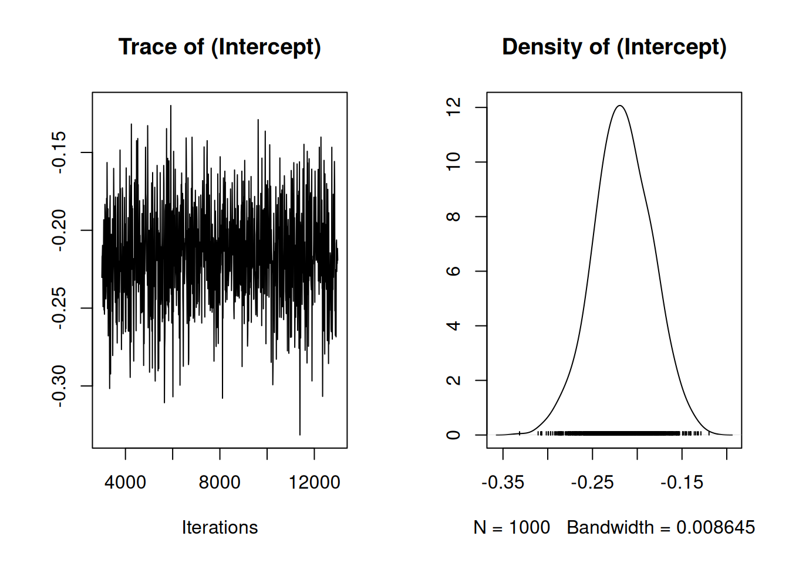
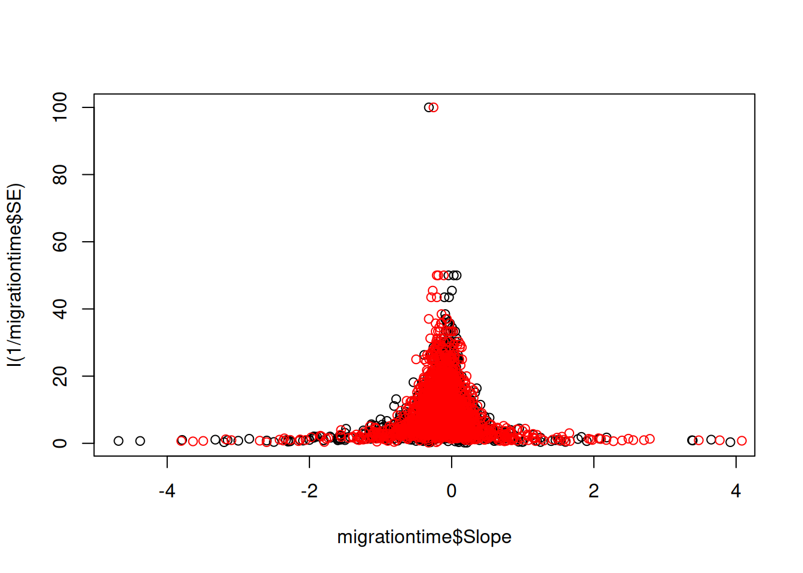

library(rio)
library(tidyverse)
library(MCMCglmm)Introduction to linear mixed models
1 Purpose
This is a follow-along document reporting my engagement with Coding Club’s Meta-analysis for biologists using MCMCglmm tutorial. Not everything in the tutorial is expected to be replicated here.
The following libraries are used in this tutorial:
2 Understanding what a meta-analysis is
A meta-analysis is a statistical analysis of results from many individual studies on similar subjects. It provides a much more robust estimate than each individual study alone. It can also reveal patterns and trends across studies, as it allows them to be compared while controlling for sources of non-independence and measurement error inherent in individual studies.
Comparing studies from different locations (e.g. latitude, elevation, hemisphere, climate zone), across different species (e.g. with different behaviours or life history traits) or time periods (e.g. when the study was done and how long it lasted) introduce sources of non-independence which need to be controlled for when estimating an average effect across all studies.
However, these sources of non-independence may be of interest to us; for example, perhaps in controlling for latitude, we also discover it explains a large proportion of the variance across studies in the response we are looking at. We can then say that latitude is a good predictor of this response.
As biologists, we are often looking for predictors (such as the locational differences, species, or time periods mentioned above) of how organisms respond to different treatments, or in environments etc.
2.1 A meta-analysis is a great way to do this.
Often results used in a meta-analysis have come from previously published studies. This workshop is aimed at teaching you what to do once you have collected your data, although the dataset we will use is a good example of one used in a meta-analysis.
To learn more about how to conduct a systematic review (the pre-cursor to a meta-analysis) check out this: http://www.prisma-statement.org/. Before continuing with your own meta-analysis, this paper offers some good advice on what makes a good one.
For now, let’s move on to the next step…
3 Understanding what MCMCglmm is and why you might want to use it
MCMCglmm fits Generalised Linear Mixed-effects Models using a Markov chain Monte Carlo approach under a Bayesian statistical framework. If some or all of those things make no sense to you, don’t worry – you can still use MCMCglmm without understanding all of this.
Bayesian statistics sounds scary, but actually it’s more intuitive to understand (in my opinion) than frequentist statistics.
For example, if I had a coin and asked what is the probability of flipping a head you would say 0.5. This would be the frequency of heads if you flipped the coin a large number of times. This is the basis of frequentist statistics: the probability of observing the data conditional on a set of parameter values. This probability is equal to the frequency at which a particular set of data would be observed had the experiment been run (hypothetically) a very large number of times.
Alternatively, if I had already flipped the coin but did not let you see it, and asked the same question you would still say 0.5. But this is different - the coin is already flipped and it is either a head or a tail with probability zero or one. You have stated 0.5 because you don’t know what actually happened during the coin flip. This is the basis of Bayesian statistics: there is a true parameter value out there but you don’t know what it is.
Bayesian statistics therefore considers the probability of a set of parameter values conditional on observing the data. This probability is characterising subjective uncertainty about the true values.
In other words, frequentist statistics relies on you sampling the population enough times until you get a true value, but this value can change depending on the number of times you sample from the distribution i.e. data you use can change but you don’t change the parameters in your model. Whereas with Bayesian stats you know there can only be one true distribution regardless of how many times you sample from it, and instead you use your understanding of the system to influence the parameters you choose to describe this distribution in your model, i.e. the data don’t change, it’s your model that changes.
Furthermore, with Bayesian statistics, we include prior probabilities in our models, based on our knowledge of previous situations. In this case, the data are fixed and the parameters are what we change, depending on our prior knowledge, and whether we think it’s likely that a certain outcome will happen.
Take a look at this schematic of Bayes’ theorem. The output of a MCMCglmm model is a posterior distribution, which is a combination of your data, your prior knowledge, and the likelihood function.
More info on GLMMs in this paper . MCMC is a bit more complicated to explain. Most simply put, it’s an algorithm which can draw random samples from a posterior distribution so that we can explore its characteristics. If you would like to understand a bit more about how Markov chain Monte Carlo algorithms work, check out these links, and this one.
4 Learning the difference between fixed versus random effects meta-analyses and an introduction to variance
In this section we are going to consider the difference between a fixed and random effects meta-analysis. This is different to considering the difference between fixed and random effects, although you may learn a little bit about the difference between these, too. As the glmm part of MCMCglmm would suggest, you can also use the package for mixed-effects meta-analyses.
There is no fundamental distinction between (what we call) fixed effects and random effects in a Bayesian analysis. The key is in understanding how each type of analysis deals with variance.
In these funnel plots, each data point represents a response (slope of change in timing of arrival of birds at their breeding grounds in days/year) from a previously published study. We use 1/SE as a measure of precision. Data points estimated with high standard error will have low precision, and gather towards the bottom of the plot. Vice versa with those estimated with low standard error. Thus, points with low standard error (high precision) should funnel in around the true effect size.
Fixed effect meta-analyses assume that any between-observation variance is due to sampling error alone (such that the funnel plot goes to a point as the precision goes to infinity). They are particularly useful when combining experimental studies. For example, do males or females respond more effectively to a treatment? In a meta-analysis of lots of treatments of individuals, we may include sex as a fixed effect because we want a definitive answer to this question.
When we treat an effect as fixed, we believe that knowledge of other effects does not provide information on the likely magnitude of our focal effect. For example, imagine we had five treatments and a control. If we knew that four of the five treatments changed the response by less than 10% then we would not use this information to down weight estimates of the fifth treatment that were more extreme.
With random effects meta-analyses, we do use this information: sampling error is likely to contribute to extreme estimates and so they should be trusted less, i.e. given less statistical weight. Furthermore, some of the between observation variance is allowed to be real and is estimated. This is particularly useful when asking questions with data from wild systems, where we would assume there is natural variation, and we want to find patterns that might help us explain it.
For example, let’s say we want to know whether migratory birds arrive at their breeding grounds at roughly the same time of year as they did in past decades, or if they now arrive earlier or later as a result of changing climates. We have collected data from many different published studies reporting the number of days earlier or later birds arrive in days/year and days/degree Celsius. This global meta-dataset includes data from many different species, countries, latitudes etc.
We’ll be using a dataset that contains this information. You’ve already downloaded the dataset migration_metadata.csv from this repository, so you can import it into R to have a look. The data come from this elegant meta-analysis of changes in timing of bird migration.
Using a meta-analysis we can calculate the average number of days’ difference across all populations for which we have data using the intercept as our only fixed effect. But, we would assume that there will be a huge amount of variation around this average response, and we want to figure out if we can find any patterns in it, maybe across species, locations or life history traits.
Including species as a random effect will tell us how much variance there is between species. It will also estimate an average response for each, however, it is usually more informative to report the variance between species, rather than the effect of each species separately. In this respect, you might choose to include something as a random effect when there are lots of categories (in this case there are lots of species) in your variable, so that you can report the variance.
5 Becoming familiar with the syntax and model output
migrationdata <- import('migration_metadata.csv') %>% as_tibble()# Custom function to get a sense of the data as a dataframe:
my_glimpse <- function(df, nn = 7) {
df <- df %>%
mutate(across(everything(), ~ if_else(is.character(.) & str_detect(., "^\\s*$"), NA, .)))
tibble::tibble(
Variable = names(df),
N_distinct = unname(purrr::map_int(df, dplyr::n_distinct)),
NAs = unname(purrr::map_int(df, ~ sum(is.na(.)))),
Types = unname(purrr::map_chr(df, ~ paste(class(.), collapse = ', '))),
Content = unname(purrr::map_chr(df, ~ {
vals_unique <- unique(.)
n_vals_unique <- length(vals_unique)
if (n_vals_unique == 0)
''
else if (n_vals_unique > nn)
paste(paste0(head(vals_unique, nn), collapse = ', '), ',...')
else
paste(vals_unique, collapse = ', ')
}))
)
}s_migrationdata <- my_glimpse(migrationdata)Have a look at the dataset. Check out the Predictor variable. There are two, time and temperature. For the first part of the tutorial, let’s just look at rows where annual arrival date has been measured over time. To try things on your own afterwards, try replacing time with temperature and following the steps below.
migrationdata %>%
filter(Predictor == "year") -> migrationtime # this reduces the dataset to one predictor variable, time.
s_migrationtime <- my_glimpse(migrationtime)Before we start, let’s plot the data. A funnel plot is typically used to visualize data for meta-analyses. This is done by plotting the predictor variable against 1/standard error for each data point. This weights each study in the plot by its precision, ultimately giving less weight to studies with high standard error. In this case, Slope is change in arrival date in days/year.
plot(migrationtime$Slope, I(1/migrationtime$SE)) # this makes the funnel plot of slope (rate of change in days/year) and precision (1/SE)You can see here that the data seem to funnel in around zero, and that both positive and negative values are well represented, i.e. this study does not suffer from publication bias. Let’s look at the plot again, with a more zoomed in view.
plot(migrationtime$Slope, I(1/migrationtime$SE), xlim = c(-2,2), ylim = c(0, 60))
Now, we can see in more detail that the true value seems to funnel in just left of zero, and there is quite a lot of variation around this. Understanding how the data look is a good place to start.
Now we’ll run a random effects model, with only the intercept as a fixed effect. The intercept is going to estimate the average change in arrival date across all data points. There are lots of different species, locations and studies in this analysis, and so the random effects are going to estimate whether there is true variation around the intercept and how much of it can be explained by an effect of species, location, or study.
randomtest <- MCMCglmm(Slope ~ 1, random = ~Species + Location + Study, data = migrationtime)Warning: Unknown or uninitialised column: `family`.We now have a distribution of estimated parameters, because MCMCglmm has run through 13,000 iterations of the model and sampled 1000 of them to provide a posterior distribution.
Let’s look at our summary statistics, summary(randomtest). The summary shows us a posterior mean for each effect, upper and lower 95% Credible Intervals (not Confidence Intervals) of the distribution, effective sample size and for the fixed effects, a pMCMC value.
summary(randomtest)
Iterations = 3001:12991
Thinning interval = 10
Sample size = 1000
DIC: 2519.199
G-structure: ~Species
post.mean l-95% CI u-95% CI eff.samp
Species 0.01186 0.0002241 0.03191 59.77
~Location
post.mean l-95% CI u-95% CI eff.samp
Location 0.0002858 1.613e-16 0.001277 94.49
~Study
post.mean l-95% CI u-95% CI eff.samp
Study 0.03529 0.01381 0.06246 1000
R-structure: ~units
post.mean l-95% CI u-95% CI eff.samp
units 0.2232 0.2045 0.2404 114.1
Location effects: Slope ~ 1
post.mean l-95% CI u-95% CI eff.samp pMCMC
(Intercept) -0.2163 -0.2805 -0.1528 1000 <0.001 ***
---
Signif. codes: 0 '***' 0.001 '**' 0.01 '*' 0.05 '.' 0.1 ' ' 1Your effective sample size should be quite high (I usually aim for 1000-2000). More complicated models often require more iterations to achieve a comparable effective sample size.
5.1 Assessing Significance
We can accept that a fixed effect is significant when the credible intervals do not span zero, this is because if the posterior distribution spans zero, we cannot be confident that it is not zero. While a pMCMC value is reported, it’s better to pay more attention to the credible intervals. Ideally your posterior distribution will also be narrow indicating that that parameter value is known precisely. Here’s an example of a poorly and a well estimated posterior distribution. The red line represents the posterior mean in both cases.
With random effects, we estimate the variance. As variance cannot be zero or negative, we accept that a random effect is significant when the distribution of the variance is not pushed up against zero. To check this, we can plot the histogram of each posterior distribution.
# Plot the posterior distribution as a histogram to check for significance and whether it's been well estimated or not
# Variance cannot be zero, and therefore if the mean value is pushed up against zero your effect is not significant
# The larger the spread of the histogram, the less well estimated the distribution is.
par(mfrow = c(1,3))
hist(mcmc(randomtest$VCV)[,"Study"])
hist(mcmc(randomtest$VCV)[,"Location"])
hist(mcmc(randomtest$VCV)[,"Species"])par(mfrow=c(1,1)) # Reset the plot panel back to single plotsHere we can see that the distribution of variance for Location and Species is pressed right up against zero. For a random effect to be significant, we want the tails to be well removed from zero.
5.2 Assessing model convergence
Now let’s check for model convergence. We do this separately for both fixed and random effects.
plot(randomtest$Sol)
Here you can see the trace and density estimate for the intercept. The trace is like a time series of what your model did while it was running and can be used to assess mixing (or convergence), while the density is like a smoothed histogram of the estimates of the posterior distribution that the model produced for every iteration of the model.
To make sure your model has converged, the trace plot should look like a fuzzy caterpillar. It looks like the intercept has mixed well.
If you suspect too much autocorrelation there are a few things you can do.
Increase the number of iterations, default is
13000(e.g.nitt = 60000, I often use hundreds of thousands of iterations for more complex models)Increase the burn in, the default here is that
MCMCglmmwill discount the first 3000 iterations which aren’t as accurate as the model hasn’t converged yet, you can increase this (e.g.burnin = 5000)Increase the thinning interval, the default is 10 (e.g.
thin = 30)Think about using a stronger prior, but more on that in a little while.
Note from Jarrod: In a Markov chain the value at time t is independent of the value at time t-2, conditional on the value at time t-1. This does not mean that each iteration should be independent of the past one; in fact they will be autocorrelated (except in the simplest analyses). You don’t have to ensure stored samples are independent - the key thing is that for the same number of iterations an autocorrelated sample contains less information than a correlated sample. If you want to store a set number of samples (because you don’t want to use your hard drive up) you are then better increasing the thinning interval so the samples you have collected are less correlated.
For more on diagnostics check this link out: http://sbfnk.github.io/mfiidd/mcmc_diagnostics.html.
Let’s do the same thing now, but for the variances of the random effects. Depending on your laptop and screen, you may get an error message saying that the plots are too big to display - you can make your plot panel bigger by dragging it upwards and towards the left, then your plots will have enough space to appear.
par(mfrow = c(2, 2), mar = c(4, 4, 2, 1)) # Creates a 2x2 grid with compact margins
plot(randomtest$VCV)It looks like some of the variances of the random effects haven’t mixed very well at all. The effective sample size is also very small. Maybe we could improve this by increasing the number of iterations, but because the chain seems to be stuck around zero, it looks like we’ll need to use a stronger prior than the default.
You can find more information about this in Chapter 8 of the MCMCglmm course notes.
6 Learning what a prior is, and the (absolute) basics on how they work
The most difficult part of a Bayesian analysis to understand is how to fit correct priors.
These are mathematical quantifications of our prior knowledge of what we think the mean and/or variance of a parameter might be. We fit a separate prior for each fixed and random effect, and for the residual.
We can thus use priors to inform the model which shape we think the posterior distribution will take. In the schematic below, you can see we use our prior beliefs to “drag” the distribution of our likely parameter values towards the left.
It’s very difficult to understand how the prior interacts with the distribution of the data and the likelihood function to give the posterior distribution. That’s why we need complex algorithms like MCMC. However, it’s very difficult to be confident that you have done this correctly, and a key reason why Bayesian statistics can be confusing.
Firstly, priors can vary in how informative they are. Weakly informative priors should be used in situations where we don’t have much prior knowledge and want the data to speak for themselves. The prior won’t drag the posterior distribution away from the parameter values which the data suggest are likely. Informative priors provide information that is crucial to the estimation of the model, and will shape the posterior distribution quite a bit.
In MCMCglmm, each prior follows a similar formula and whether it is strongly or weakly informative depends on the values you include in it.
Note
Note from Jarrod: Priors don’t have to follow a similar formula: they do in MCMCglmm because only a few prior distributions are allowed for each type of parameter.
Be careful when you read that a prior is uninformative; there is no such thing as a completely uninformative prior, but explaining why is beyond what’s necessary for this tutorial.
With MCMCglmm, the default prior assumes a normal posterior distribution with very large variance for the fixed effects and a flat improper (weakly informative) prior. For the variances of the random effects, inverse-Wishart priors are implemented. An inverse-Wishart prior contains your variance matrix V, and your degree of believe parameter, nu.
Below you can see what an inverse Wishart prior looks like in graphical terms. You can see that nu can vary in its strength and level of information. Imagine what each level of nu might do to your data - we might expect that when nu is low, it will be less informative, except for the lowest values of your distribution, which it might drag leftwards slightly.
The more complicated your models become, the more likely it is that you will eventually get an error message, or as we have just seen, that your models will not mix from the beginning. In this case we should use parameter expanded priors of our own. The use of parameter expansion means the priors are no longer inverse-Wishart but scaled-F (don’t worry if you don’t understand this!). This is not neceassrily a bad thing, as parameter expanded priors are less easy to specify incorrectly than inverse-Wishart priors.
However, proceed with caution from this point on!
7 Understanding parameter expanded priors and measurement error
Let’s run the model again, but this time we’ll use parameter expanded priors for the random effects by including prior = prior1. Each random effect is represented by a G, and the residual is represented by R. The parameter expansion refers to the fact that we have included a prior mean (alpha.mu) and (co)variance matrix (alpha.V) as well as V and nu. For now, alpha.V is going to be 1000, but you can lean more about other variance structures in the Extras section of this tutorial, and in the MCMCglmm course notes, too.
a <- 1000
prior1 <- list(R = list(V = diag(1), nu = 0.002),
G = list(G1 = list(V = diag(1), nu = 1, alpha.mu = 0, alpha.V = diag(1)*a),
G1 = list(V = diag(1), nu = 1, alpha.mu = 0, alpha.V = diag(1)*a),
G1 = list(V = diag(1), nu = 1, alpha.mu = 0, alpha.V = diag(1)*a)))
randomprior <- MCMCglmm(Slope ~ 1, random = ~Species + Location + Study,
data = migrationtime, prior = prior1, nitt = 60000)Warning: Unknown or uninitialised column: `family`.
Note
Note: I have increased the number of iterations as 60000 to improve mixing and effective sample sizes.
Note
Another note: I haven’t printed any summary statistics to show in this tutorial. Because of the stochastic nature of MCMC, every time you (re)run a model, your output will be slightly different, so even if you use the same effects in your model, it would always be slightly different to whatever was printed here.
summary(randomprior)
Iterations = 3001:59991
Thinning interval = 10
Sample size = 5700
DIC: 2512.182
G-structure: ~Species
post.mean l-95% CI u-95% CI eff.samp
Species 0.01772 2.197e-08 0.04299 2160
~Location
post.mean l-95% CI u-95% CI eff.samp
Location 0.003791 8.014e-11 0.01504 3819
~Study
post.mean l-95% CI u-95% CI eff.samp
Study 0.03785 0.01546 0.06699 4332
R-structure: ~units
post.mean l-95% CI u-95% CI eff.samp
units 0.2198 0.1998 0.2391 3219
Location effects: Slope ~ 1
post.mean l-95% CI u-95% CI eff.samp pMCMC
(Intercept) -0.2174 -0.2994 -0.1452 5700 <2e-04 ***
---
Signif. codes: 0 '***' 0.001 '**' 0.01 '*' 0.05 '.' 0.1 ' ' 1The effective sample sizes are much bigger now! This is a good sign.
par(mfrow = c(2, 2), mar = c(4, 4, 2, 1)) # Creates a 2x2 grid with compact margins
plot(randomprior$VCV)The models look to have mixed much better too. This is also good.
Before we do our model checks, I want to control for sampling error in the model. This is one of the key reasons we would use MCMCglmm for meta-analysis over another programme or package. You can read the meta-analysis section of the course notes to understand more.
The key assumption of a meta-analysis is that the between observation variance due to sampling error can be approximated as the standard error squared. We can use a computational trick to allow this in MCMCglmm by fitting idh(SE):units as a random effect and fixing the associated variance at 1. You can see that we now have four random priors, the last of which is fixed at 1.
prior2 <- list(R = list(V = diag(1), nu = 0.002),
G = list(G1 = list(V = diag(1), nu = 1, alpha.mu = 0, alpha.V = diag(1)*a),
G1 = list(V = diag(1), nu = 1, alpha.mu = 0, alpha.V = diag(1)*a),
G1 = list(V = diag(1), nu = 1, alpha.mu = 0, alpha.V = diag(1)*a),
G1 = list(V = diag(1), fix = 1)))
randomerror2 <- MCMCglmm(Slope ~ 1, random = ~Species + Location + Study + idh(SE):units,
data = migrationtime, prior = prior2, nitt = 60000)Warning: Unknown or uninitialised column: `family`.par(mfrow = c(2, 2), mar = c(4, 4, 2, 1)) # Creates a 2x2 grid with compact margins
plot(randomerror2$VCV)If you check the summary now, you can see that now we’ve included measurement error, our estimates are much more conserved. Studies with higher standard error have been given lower statistical weight.
summary(randomerror2)
Iterations = 3001:59991
Thinning interval = 10
Sample size = 5700
DIC: -1546.628
G-structure: ~Species
post.mean l-95% CI u-95% CI eff.samp
Species 0.006181 0.003874 0.008895 4351
~Location
post.mean l-95% CI u-95% CI eff.samp
Location 0.005667 1.077e-09 0.01786 395.8
~Study
post.mean l-95% CI u-95% CI eff.samp
Study 0.015 0.005467 0.02593 873.4
~idh(SE):units
post.mean l-95% CI u-95% CI eff.samp
SE.units 1 1 1 0
R-structure: ~units
post.mean l-95% CI u-95% CI eff.samp
units 0.01381 0.01151 0.01601 3829
Location effects: Slope ~ 1
post.mean l-95% CI u-95% CI eff.samp pMCMC
(Intercept) -0.1804 -0.2356 -0.1277 5635 <2e-04 ***
---
Signif. codes: 0 '***' 0.001 '**' 0.01 '*' 0.05 '.' 0.1 ' ' 1Now, we’ll perform our model checks. To do this, we will simulate new data given the same parameter values (variance/co-variance structures (priors)), and then plot it against our real data to make sure they overlap. Remember that in Bayesian analyses, the data remain fixed and it’s the parameters that change. So if we have used the correct parameters, we should be able to use them to simulate new data that look like the original.
xsim <- simulate(randomerror2) # reruns 100 new models, based around the same variance/covariance structures but with simulated data.
plot(migrationtime$Slope, I(1/migrationtime$SE))
points(xsim, I(1/migrationtime$SE), col = "red") # here you can plot the data from both your simulated and real datasets and compare them
Note
Note from Jarrod: The issue here is complicated - but let’s give it a try. The issue is that the sampling variance for low-precision estimates is actually higher than the \(\text{SE}^2\) (i.e. the assumption of a meta-analysis is not met). This means:
- too much weight is still put on low precision studies
- some of the biological variation (the units variance) is overestimated and
- if publication bias is more likely amongst low-precision studies then the mean effect size may be biased.
One quick solution is to see if the between observation variance increases more with the reported standard error faster than it should. To do this we can estimate the variance, rather than assume it is 1, and see if the estimate is greater than 1.
Let’s rerun the model, but this time changing the prior for measurement error so that it is no longer fixed at 1.
set.seed(123)
prior3 <- list(
R = list(V = diag(1), nu = 0.002),
G = list(
G1 = list(V = diag(1), nu = 1, alpha.mu = 0, alpha.V = diag(1)*a),
G1 = list(V = diag(1), nu = 1, alpha.mu = 0, alpha.V = diag(1)*a),
G1 = list(V = diag(1), nu = 1, alpha.mu = 0, alpha.V = diag(1)*a),
G1 = list(V = diag(1), nu = 1, alpha.mu = 0, alpha.V = diag(1)*a)
)
)
randomerror3 <- MCMCglmm(Slope ~ 1, random = ~Species + Location + Study + idh(SE):units,
data = migrationtime, prior = prior3, nitt = 60000)Warning: Unknown or uninitialised column: `family`.Now we can simulate new data again, and plot it against our collected data.
xsim <- simulate(randomerror3)
plot(migrationtime$Slope, I(1/migrationtime$SE))
points(xsim, I(1/migrationtime$SE), col = "red") # here you can plot the data from both your simulated and real datasets and compare them
These parameters seem to be a better fit for our data.
Another trick for checking whether the parameters fit the data is to make sure your max (or min) values fit inside a histogram of your simulated distribution, like this:
xsim <- simulate(randomerror3, 1000) # 1000 represents the number of simulations, and for some reason needs to be higher than the default to work in this case
hist(apply(xsim, 2, max), breaks = 30) # plot your simulation data
abline(v = max(migrationdata$Slope), col = "red") # check to see whether the max value of your real data falls within this histogram.Hopefully this has given you a good idea on how to get started with MCMCglmm!
8 Now it’s your turn!
8.1 Filter the data by rows which have temperature as the predictor.
migrationtemperature <- migrationdata %>%
filter(Predictor == 'temperature')8.2 Plot the data using a funnel plot.
plot(migrationtemperature$Slope, I(1/migrationtemperature$SE)) # this makes the funnel plot of slope (rate of change in days/year) and precision (1/SE)8.3 Run a basic random effects model. Save the posterior mode.
set.seed(123)
mine_basic <- MCMCglmm(Slope ~ 1, random = ~Species + Location + Study, data = migrationtemperature)Warning: Unknown or uninitialised column: `family`.8.4 Plot VCV (random) and Sol (fixed) and check for autocorrelation.
plot(mine_basic$Sol)par(mfrow = c(2, 2), mar = c(4, 4, 2, 1)) # Creates a 2x2 grid with compact margins
plot(mine_basic$VCV)
8.5 Increase the number of iterations and burn in, check your priors.
set.seed(123)
a <- 1000
prior1 <- list(R = list(V = diag(1), nu = 0.002),
G = list(
G1 = list(V = diag(1), nu = 1, alpha.mu = 0, alpha.V = diag(1)*a),
G1 = list(V = diag(1), nu = 1, alpha.mu = 0, alpha.V = diag(1)*a),
G1 = list(V = diag(1), nu = 1, alpha.mu = 0, alpha.V = diag(1)*a),
G1 = list(V = diag(1), nu = 1, alpha.mu = 0, alpha.V = diag(1)*a)
)
)
mine_adjusted <- MCMCglmm(
Slope ~ 1, random = ~ Species + Location + Study + idh(SE):units,
data = migrationtemperature, prior = prior1, nitt = 60000,
burnin = 5000
)Warning: Unknown or uninitialised column: `family`.8.6 Do model checks.
We can start by evaluating how well the algorithm has run. This involves looking at the effective sample size (ESS) in the summary, as well as plotting the sol and random effect variance (VCV) graphs.
When running the model, the MCMC algorithm generates a sequence of autocorrelated samples approximating the posterior distribution, typically one per iteration (after burn-in and thinning). The ESS indicates a hypothetical number of independent samples that would have provided the same information. Higher numbers are better.
The accompanying density plot should appear smooth and well-formed, indicating the MCMC has adequately characterized the posterior distribution. Later in the analysis, the importance of the parameters can be assessed by examining this posterior distribution. For instance, if the bulk of the distribution for fixed effects is away from zero, this suggests that the effect is non-zero.
For the VCV plots, the trace plots should also resemble a fuzzy caterpillar as a sign of good mixing. Since the random effects quantify variance, the density plots should show distributions entirely on the positive side as variance cannot be negative. Later in the analysis, menaningful random effects would be those which distribution is not pushed up against zero.
summary(mine_adjusted)
Iterations = 5001:59991
Thinning interval = 10
Sample size = 5500
DIC: -1328.505
G-structure: ~Species
post.mean l-95% CI u-95% CI eff.samp
Species 0.1484 0.08732 0.2122 1009
~Location
post.mean l-95% CI u-95% CI eff.samp
Location 0.1799 4.208e-08 0.4851 84.98
~Study
post.mean l-95% CI u-95% CI eff.samp
Study 0.0873 0.01578 0.2004 139.9
~idh(SE):units
post.mean l-95% CI u-95% CI eff.samp
SE.units 1.304 1.129 1.462 93.9
R-structure: ~units
post.mean l-95% CI u-95% CI eff.samp
units 0.0243 0.0002754 0.07154 58.97
Location effects: Slope ~ 1
post.mean l-95% CI u-95% CI eff.samp pMCMC
(Intercept) -1.097 -1.393 -0.809 838.7 <2e-04 ***
---
Signif. codes: 0 '***' 0.001 '**' 0.01 '*' 0.05 '.' 0.1 ' ' 1plot(mine_adjusted$Sol)par(mfrow = c(2, 2), mar = c(4, 4, 2, 1)) # Creates a 2x2 grid with compact margins
plot(mine_adjusted$VCV)- We can simulate new data using parameter values drawn from their estimated posterior distributions, where those posterior distributions were themselves obtained via a model constructed using certain variance/co-variance structures and informed by specific priors.
my_xsim <- simulate(mine_adjusted)
plot(migrationtemperature$Slope, I(1/migrationtemperature$SE))
points(my_xsim, I(1/migrationtemperature$SE), col = "red") - We can also check whether the parameters fit the data by making sure the max (or min) values fit inside a histogram of the simulated distribution.
my_xsim <- simulate(mine_adjusted, 1000) # 1000 represents the number of simulations, and for some reason needs to be higher than the default to work in this case
hist(apply(my_xsim, 2, max), breaks = 30)
abline(v = max(migrationtemperature$Slope), col = "red") # check to see whether the max value of your real data falls within this histogram.8.7 Interpret your model!
The posterior mean in the model is -1.1 with a credible intervals entirely on the negative side which suggests a negative correlation between temperature and bird arrival times. The ESS is about 1000 for both the fixed effect (intercept) and for the variance of the random effect Species. However, the ESS is very low - between 59 and 140 - for the variance of the remaining random variables which means that these estimates are unreliable.
By looking at the graphs, it looks that the trace plot of the fixed effect (intercept) does indeed resemble a fuzzy caterpillar, a sign of good mixing. The distribution also looks narrow and well formed which is also a good sign.
In regards to the random effects, their trace plots show some fuzziness which at first glance could be confused with the familiar fuzzy caterpillar shape. However, upon closer examination, there are underlying patterns. Specifically, the trace plot for the Species variance component exhibits good local mixing, characterized by rapid, fuzzy oscillations. However, there also appear to be some slower, longer-term drifts or undulations in the central tendency of the chain across the iterations. On the other hand, the traces of Location and Study remain stuck to around zero with some periodic spikes towards higher values. This is consistent with the reported ESS. Moving onto the density distributions, both Location and Study appear very close to zero and do not form a defined bell-like shape. Instead, the density distribution of Location shows a dented downwards curve while Study shows a typical bell-shape that is compressed towards zero and relaxes towards positive values. On the other hand, the density distributions of Species and SE.units appear well shaped and distinctively away from zero.
Based on these characteristics, the meta analysis suggests that there is a negative correlation between arrival times of migratory birds and temperature. Furthermore, there model has substantially estimated variation attributable to the Species random effect. This estimate is reliable due to the high ESS value. Variation coming from the remaining random effects is unreliable due to low ESS values, yet it is noteworthy to that it was estimated to be close to zero. The variation attributable to the SE.units variables is also substantial although unreliable due to the low ESS value. It could mean that the true sampling variance might be larger than initially assumed by \(\text{SE}^2\). That implies that the true sampling variance in all studies is likely higher than reported and therefore studies with high SE are down weighted even more.
A word of caution: the low ESS calculated for some variables, and misshaped traces, suggests that the estimates for some variables in this model may not be accurate.
8.8 After you read the next section, you might want to include some fixed effects, or use different variance structures for your residual as well.
Coming back from reading and playing with the following section, one could:
- Include fixed effects in the model. This is straightforward to implement by adding terms to the fixed part of the model.
- One needs to have the column
Response_variableas a factor and adjust the structure of the prior to become a 3x3 matrix since there are three categories in that column.
9 Extras: fixed effects, posterior mode (BLUPs), non-gaussian families, (co)variance structures
9.1 Fixed effects
As well as random effects, you can also fit fixed effects. MCMCglmm estimates the random effects just like fixed effects, but with random effects meta-analyses, it is the variance that is usually the focus of the analysts interest.
set.seed(123)
fixedtest <- MCMCglmm(Slope ~ Migration_distance + Continent, random = ~Species + Location + Study + idh(SE):units, prior = prior3, data = migrationtime, nitt = 60000)Warning: Unknown or uninitialised column: `family`.
Note
I have never had to change the priors for a fixed effect, but this would be worth some research for your own projects.
9.2 Calculating the posterior mean of the random effects (similar to Best Linear Unbiased Predictors)
I previously mentioned that MCMCglmm estimates both the variance of a random effect and the true effect size for each category within it, but that it is more informative to report the variance of the random effects than it is to report each effect size. When you use summary(), R will therefore report the variance and credible intervals of the random effects, but not the effect sizes. However, you can save the posterior mode of these effect sizes and report them in your work. You should never do further statistical analyses on them though, and always be sure to let your reader know that this is where your prediction has come from.
9.3 Why aren’t we calling them Best Linear Unbiased Predictors?
Note
Note from Jarrod: There is no fundemental difference between (what we call) fixed and random effects in a Bayesian analysis. However, in a Frequentist anlysis there is, and that’s why they use the words estimating and predicting. The distinction is not required when using MCMCglmm. BLUPS can be interpreted as the posterior mode of the random effects conditional on (RE)ML estimates of the variances. You can of course calculate the posterior modes of the random effects in MCMCglmm, but they are not BLUPS because we haven’t conditioned on the variances but averaged over their uncertianity.
To save the posterior mode of for each level or category in your random effect(s) we use pr = TRUE, which saves them in the $Sol part of the model output. Take a look:
# It seem sthat we need to clean the `Study` names first:
migrationtime_clean <- migrationtime %>%
mutate(
Study = str_replace_all(Study, '[$A-Za-z ]', ' '),
Study = str_squish(Study)
)
fixedtest <- MCMCglmm(
Slope ~ Migration_distance + Continent,
random = ~Species + Location + Study + idh(SE):units,
data = migrationtime_clean,
prior = prior3,
pr = TRUE,
nitt = 60000
)Warning: Unknown or uninitialised column: `family`.Each random effect has a posterior distribution. The BLUP is like the mode of this posterior distribution.
posteriormode <- apply(fixedtest$Sol, 2, mode)If we want to look at the posterior modes for Species, for example, we can choose the correct rows using the code below. This is a bit fiddly if you have lots of levels.
names(posteriormode) %>% as_tibble() # identify which posterior modes belong to Species# A tibble: 2,316 × 1
value
<chr>
1 (Intercept)
2 Migration_distanceshort
3 Migration_distanceunclassified
4 ContinentAntarctica
5 ContinentAsia
6 ContinentAustralasia
7 ContinentEurope
8 ContinentNorth America
9 Species.Accipiter cooperii
10 Species.Accipiter nisus
# ℹ 2,306 more rowsposteriormode[9:416] %>% as_tibble() # there are a lot of species in this analysis!# A tibble: 408 × 1
value
<chr>
1 numeric
2 numeric
3 numeric
4 numeric
5 numeric
6 numeric
7 numeric
8 numeric
9 numeric
10 numeric
# ℹ 398 more rowsThis code will sort from smallest value to largest. Now you can report which species have been most or least responsive in changing their arrival date at breeding grounds.
sort(posteriormode[9:416]) %>% as_tibble()# A tibble: 408 × 1
value
<chr>
1 numeric
2 numeric
3 numeric
4 numeric
5 numeric
6 numeric
7 numeric
8 numeric
9 numeric
10 numeric
# ℹ 398 more rows9.4 Non-gaussian families
This tutorial has been based around using a Gaussian distribution. However, MCMCglmm can handle non-Gaussian families as well. Specify family= to choose the correct distribution.
9.5 Calculating 95% Credible Intervals
You may want to plot or report credible intervals from a model, without lifting the numbers straight from the summary. To do this you use HPDinterval(mcmc())
Here’s an example:
HPDinterval(mcmc(fixedtest$Sol[,"(Intercept)"])) lower upper
var1 -0.3243132 0.01337306
attr(,"Probability")
[1] 0.95This should look like similar values to the 95% Credible Intervals of the posterior distribution of your intercept when you look at the summary.
HPDinterval is particularly useful when you want to combine effects. Say you want to know the mean and the upper & lower 95% credible intervals of the posterior distribution of a short distance migrant from Europe. You can do that like this:
mean(mcmc(fixedtest$Sol[,"(Intercept)"]) + fixedtest$Sol[,"Migration_distanceshort"] + fixedtest$Sol[,"ContinentEurope"])[1] -0.2276127HPDinterval(mcmc(fixedtest$Sol[,"(Intercept)"]) + fixedtest$Sol[,"Migration_distanceshort"] + fixedtest$Sol[,"ContinentEurope"]) lower upper
var1 -0.2899531 -0.1626912
attr(,"Probability")
[1] 0.95These values can then be used in plots, or reports etc.
9.6 (Co)variance structures
Until now, we have learned that for each random effect and the residual in our model, MCMCglmm estimates the variance within that effect, i.e. the variance is in a 1x1 matrix - [V]. However, we can restructure the variance matrix within random effects and the residual if we want.
But why on earth would we want to do that? Here’s an example. In previous models, we have assumed that all measures of arrival date were the same, but actually, it has been measured in three different ways; first, mean and median dates of arrival. Peak arrival is included as a category here too, but there are no rows containing it.
migrationtimef <- migrationtime_clean %>%
mutate(
Response_variable = as.factor(Response_variable)
)
levels(migrationtimef$Response_variable)[1] "first arrival" "mean arrival" "median arrival"Our residual variance is therefore heterogeneous, and we need to take this into account in our model. We can do this by using the idh():units function in rcov.
Because we want to estimate the variance separately for each of these levels, we have to change the variance structure for the residual prior. In this case, we use a 3x3 variance matrix, because there are three types of response.
prior4 <- list(
R = list(V = diag(3), nu = 0.002),
G = list(
G1 = list(V = diag(1), nu = 1, alpha.mu = 0, alpha.V = diag(1)*a),
G1 = list(V = diag(1), nu = 1, alpha.mu = 0, alpha.V = diag(1)*a),
G1 = list(V = diag(1), nu = 1, alpha.mu = 0, alpha.V = diag(1)*a),
G1 = list(V = diag(1), nu = 1, alpha.mu = 0, alpha.V = diag(1)*a)
)
)If you just run prior4 in your R console you should be able to visualise the matrix for the residual prior a bit more easily.
set.seed(123)
fixedtest <- MCMCglmm(
Slope ~ Migration_distance + Continent,
random = ~Species + Location + Study + idh(SE):units,
data = migrationtime_clean, rcov = ~idh(Response_variable):units, prior = prior4, pr = TRUE, nitt = 60000)Warning: Unknown or uninitialised column: `family`.summary(fixedtest)
Iterations = 3001:59991
Thinning interval = 10
Sample size = 5700
DIC: -4167.622
G-structure: ~Species
post.mean l-95% CI u-95% CI eff.samp
Species 0.003153 0.001744 0.004643 2539
~Location
post.mean l-95% CI u-95% CI eff.samp
Location 0.006035 9.41e-11 0.01929 79.28
~Study
post.mean l-95% CI u-95% CI eff.samp
Study 0.007533 0.001981 0.01389 351.6
~idh(SE):units
post.mean l-95% CI u-95% CI eff.samp
SE.units 2.315 2.081 2.548 1437
R-structure: ~idh(Response_variable):units
post.mean l-95% CI u-95% CI eff.samp
Response_variablefirst arrival.units 0.003768 0.0017368 0.005784 566.3
Response_variablemean arrival.units 0.001292 0.0001783 0.002867 523.6
Response_variablemedian arrival.units 0.001855 0.0002009 0.004149 1215.4
Location effects: Slope ~ Migration_distance + Continent
post.mean l-95% CI u-95% CI eff.samp pMCMC
(Intercept) -0.15383 -0.31963 0.01534 5279 0.07018 .
Migration_distanceshort -0.03926 -0.06329 -0.01470 5020 0.00351 **
Migration_distanceunclassified 0.02823 -0.02908 0.09604 5404 0.36316
ContinentAntarctica 0.26015 -0.03671 0.56615 5700 0.08561 .
ContinentAsia 0.03326 -0.16418 0.21771 4937 0.73018
ContinentAustralasia -0.10746 -0.35526 0.16172 3650 0.39263
ContinentEurope -0.03512 -0.19775 0.13572 4653 0.66667
ContinentNorth America 0.04893 -0.15362 0.26544 5700 0.63193
---
Signif. codes: 0 '***' 0.001 '**' 0.01 '*' 0.05 '.' 0.1 ' ' 1Now we can see when we print the summary that the residual variance has now been estimated for all three measures of arrival. Success!
Finally, as well as using variance matrices, you can use co-variance matrices, replacing idh() with us(). In this case, you will need to update the prior for your effect. If there are three levels, you need to increase the size of your matrix to 3, for example.
G1 = list(V = diag(3), nu = 3, alpha.mu = rep(0,3), alpha.V = diag(3)*a)However, I think this concept falls beyond the remit of an “introduction” to MCMCglmm. You can learn more about how to fit these matrices, and get some nice visualizations of what the matrices for each function look like in the “Compound Variance Structures” sectio0n of the Course Notes. Happy structuring!
10 Playing with figures
Note
This section has nothing to do with the tutorial. I was just playing with Quarto and its document authoring features such as including and referencing figures. Turned out that it is not fully there yet so I find a workaround that needs to be implemented in a specific way so I am leaving this here for future reference.
Below is a nicely inserted figure using Quarto’s default method. This, however, makes the figure hard to see with a dark theme. The figure is Figure 1.
\[ a = b+c * \text{hello} \tag{1}\]